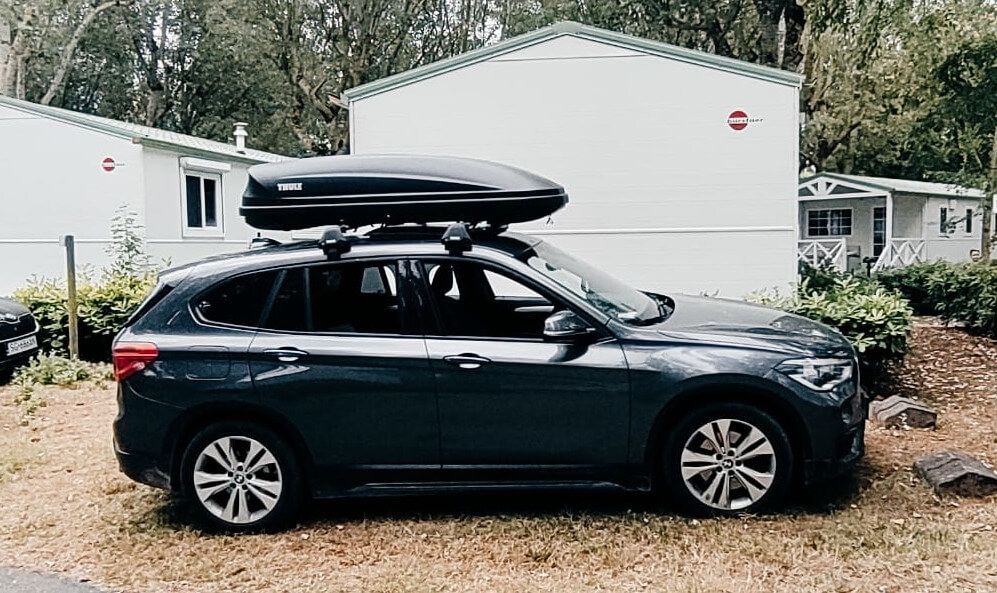
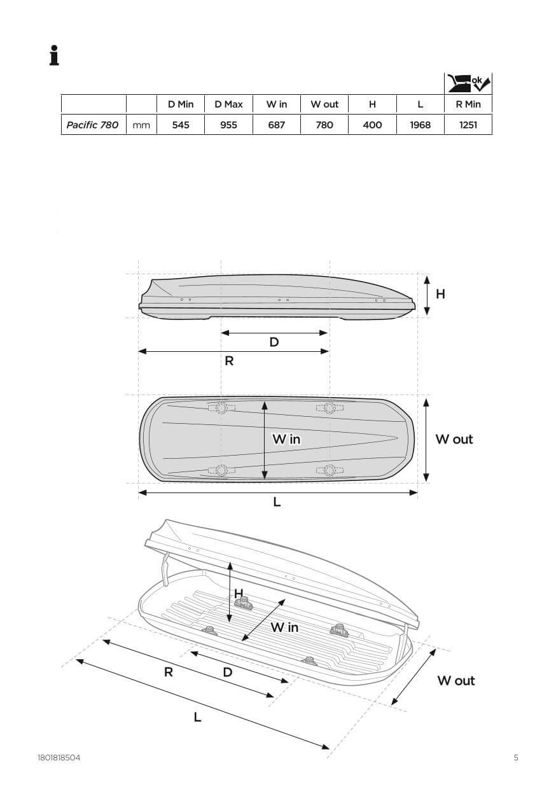

Wypożyczenie bagażnika dachowego (boxu) – Thule Pacific 780
20 zł / doba
Kaucja zwrotna: 500 zł
Potrzebujesz wypożyczyć bagażnik dachowy w Krakowie?
Oferuję do wynajęcia prywatny, zadbany i w pełni sprawny bagażnik dachowy (box) Thule Pacific 780. Idealny na wakacyjne wyjazdy, ferie zimowe, weekendowe wypady czy rodzinne podróże. Pozwala znacznie powiększyć przestrzeń bagażową Twojego samochodu.
Dane techniczne i parametry:
- Pojemność: 420 litrów
- Wymiary zewnętrzne: 196 × 78 × 40 cm
- Dopuszczalna ładowność: 50 kg
- Waga własna: 15 kg
- Otwieranie: Dwustronne (DualSide) – wygodne pakowanie z każdej strony
- System montażu: Szybki i intuicyjny FastGrip
- Pojemność zimowa: Pomieści narty o długości do 180 cm oraz deski snowboardowe
⚠️ Ważny warunek wynajmu: Twój samochód musi posiadać własne belki bazowe (poprzeczki) na dachu. Bagażnik montowany jest bezpośrednio do belek – nie znajdują się one w zestawie wynajmu.
Odbiór i Transport:
- 📍 Odbiór osobisty: Węgrzce (tuż przy granicy z Krakowem, północny wjazd). Pomagam w sprawnym i bezpiecznym montażu na miejscu!
- 🚚 Dostawa: Możliwa dostawa pod wskazany adres na terenie Krakowa i okolic po wcześniejszym uzgodnieniu.